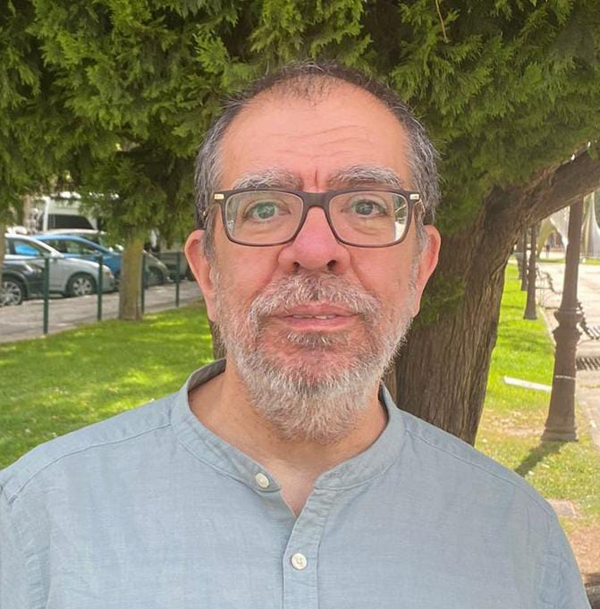

Formal methods & debugging
Declarative and algorithmic debugging, testing, semantics and verification for complex software systems.
Computer Science · UCM
Associate Professor exploring how formal methods, declarative programming and data can help us understand and build better systems.
Department of Computer Systems and Computing, Faculty of Computer Science,
Complutense University of Madrid

Research
My work spans formal software techniques and applied data analysis—from declarative debugging and constraint programming to learning analytics, online social networks and astronomical data.
Faculty of Computer Science · Department of Computer Systems and Computing · Instituto de Tecnología del Conocimiento.
Declarative and algorithmic debugging, testing, semantics and verification for complex software systems.
Big Data, learning analytics, topic detection and computational approaches to online public discourse.
Data mining and astrometry applied to the detection and measurement of common proper-motion pairs.
Publications
A selection based on the current Google Scholar profile. Citation counts are a snapshot from 1 August 2026 and may change over time.
C. Alonso-Fernández, I. Martínez-Ortiz, R. Caballero, M. Freire and B. Fernández-Manjón · Journal of Computer Assisted Learning 36(3), 350–358.
View on Google Scholar ↗R. Caballero · ACM SIGPLAN Workshop on Curry and Functional Logic Programming
R. Caballero, C. Hermanns and H. Kuchen · Electronic Notes in Theoretical Computer Science
R. Caballero, A. Riesco and J. Silva · ACM Computing Surveys 50(4)
A. Riesco, A. Verdejo, R. Caballero and N. Martí-Oliet · Recent Trends in Algebraic Development Techniques
R. Caballero, Y. García-Ruiz and F. Sáenz-Pérez · Semantics in Data and Knowledge Bases
A. Díaz Guerra Romero, M. Antino, A. Rodríguez Muñoz, et al.
American Psychological Association 2024 · PDFB. Jiménez and R. Caballero
Open local manuscript 2024 · PDFR. Caballero, B. Jiménez and J. M. Robles
Open local manuscript 2023A. Fernández-Zubieta, J. A. Guevara Gil, R. Caballero Roldán and J. M. Robles Morales
Social Sciences 12(12) 2021R. Caballero, E. Martín-Martín, A. Riesco and S. Tamarit
Information and Software Technology 129 2021J. C. Losada, J. M. Robles, R. M. Benito and R. Caballero
Complex Networks and Their ApplicationsKnowledge sharing
Teaching materials and books that make data science, artificial intelligence and programming accessible to students and researchers from different backgrounds.
Astronomy
Alongside computer science, I work on astrometry and double-star observations, using catalogues and data-mining techniques to identify common proper-motion pairs.
Contact
I am based at the Faculty of Computer Science of Complutense University of Madrid.
rafacr@ucm.es